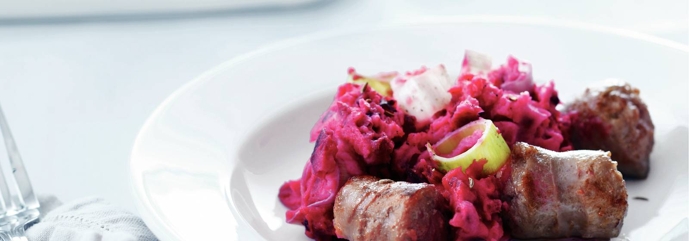

Dit is een recept van een Nederlands gerecht. Het gerecht is voor 4 personen. De bereidingstijd is 20 min. en je moet 25 min. wachten als het in de oven zit.
Het woord biet is afgeleid van het Latijnse 'beta'.
1 schaal braadworst ((4 stuks), in stukken)
1 schaal gekookte bieten (500 g)
1 bekertje zure room (125 g)
1 el komijnzaadjes
1 zak aardappelpuree ((750 g, diepvries), ontdooid)
1 prei (in ringen)
ovenschaal (25 x 30 cm)
Verwarm de oven voor op 190 °C. Verhit een koekenpan zonder olie of boter en bak de braadworst 4 min. Schep in de ovenschaal.
Snijd de bieten in blokjes van 1/2 cm (brunoise) en meng ze met de zure room en het komijnzaad door de aardappelpuree.
Breng 2 liter water aan de kook. Doe de prei in een vergiet en schenk het water erover. Schep door de puree en breng op smaak met peper en zout. Verdeel over de worst en warm 25 min. in de oven.
🍽